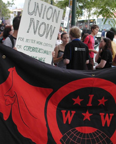

Submitted on Fri, 07/21/2006 - 3:51am
Disclaimer - This is neither an official campaign of the Bay Area IWW General Membership Branch, nor is it a campaign of the IWW as awhole. This appeal is published in solidarity with the volunteers of the KPFA Labor Collective:
On March 8, 2006, the KPFA Program Council and the management of KFPA banned any further labor programming proposals from the KPFA Labor Collective for one year. This is even longer than the anti-labor Taft-Hartley which prevents strikes and lock-outs for 90 days.
The KFPA Labor Collective has produced labor programming for many years on Labor Day, May Day, MLK day and on Workers Memorial Day.
The Program Council instituted this ban without allowing the KFPA Labor Collective the opportunity to refute false charges against us.
At the same time more than 60% of the programming on KFPA is by music programmers while many of the working class issues that people face every day are kept off the air.
The KFPA Labor Collective has members from many unions including SEIU 616, NALC 214, IBT Local 70, SEIU UHW, IUOE 39, SEIU 1000. It has also received support from the San Francisco Labor Council, the Contra Costa Labor Council and many other trade unionists for a regular weekly one hour program.
Unfortunately, the KPFA management and some of the staff are not
interested in more community programming at KFPA. Some programmers have had their time slots for 20 and 30 years and they have many hours every week while labor and other community programmers are prevented from having regular programming.
The latest statement from Acting Manager Lemlem Rijio again supports the illegal banning by the Program Council and states that managment supports it despite the fact that there have been no hearings on the reason for the banning and no transparency on this flagrant act of censorship and intimidation. This will not stand.
KFPA is an important community resource for all the people of the bay area. It has the potential of reaching 6 to 7 million people in our
region and it is critical that it provide regular labor programming.
The banning for "disruption" and taking too much "time" to review labor programming proposals from the KPFA Labor Collective is unacceptable and an attack on labor free speech rights. It was also outside the rights of the Program Council and has been challenged by many members of the Local Station Board
We call for supporters of more labor programming to attend the
upcoming KPFA Local Station Board meeting on Saturday August 19, 2006 at 11:00 AM at Freight and Salvage in Berkeley1111 Addison/San Pablo near University Ave in Berkeley
We also call on all supporters of more labor programming on KFPA to
send letters.
Please go to the http://www.kpfa.org and email:
KPFA Local Station Board
Acting KPFA Manager Lemlem Rijio at 1929 MLK Bld Berkeley, CA
Pacifica Executive Director Greg Guma greg [at] pacifica.org
Please send a copy to http://www.kpfalaborcollective.org
Ms. Rijio's letter:
KPFA Acting Manager Lemlem Rijio
To: KPFA Local Station Board
From: Interim General Manager, Lemlem Rijio
Date: July 16, 2006
Administration
Program Council---The station management agrees with members of the LSB that the KPFA program council does not have any authority in personnel matters. However, the council¹s decision to ask a group of producers to hold-off submitting proposals for a year based on its own working relationship (or lack of) with the group of producers seems well within the authority of the program council.
I have asked our HR consultant to investigate whether there are any
personnel matters that require resolution. I expect a follow up report
from him in a few weeks.
Submitted on Tue, 07/18/2006 - 4:32am
Shattuck Workers Rally on Saturday July 22 at 2pm at Shattuck Cinemas, 2230 Shattuck Ave, Berkeley.
Shattuck Cinema workers voted 22-2 to authorize union representation on June 16. Contract talks are set to begin Thursday, July 20th. Over the course of the union campaign Shattuck Cinema workers have received support from the local community which they know is essential to pressure Landmark Cinemas, which owns the the Shattuck, toward open and honest negotiations.
Amongst the workers demands are: paid sick days, health benefits, a chair for the ticket takers, and a living wage. Currently, the starting wage at the Shattuck is a mere $7.25 and hour, while the City of Berkeley's official living wage is $11.04 an hour. Most employees do not earn more than $8.00 an hour regardless of years of service or job performance. The company prefers what they call "Merit Raises". Annual Raises amounted from a $.03 to $.06 an hour increase for most employees last year.
Submitted on Sat, 07/15/2006 - 5:26pm
What happens when you have four dues paying wobblies, plus one treasurer of the SF Bike Messenger Association, plus one old wob from the 70’s, and a boss that could care less about the messenger division, all in one shop? In the case of Quicksilver Messenger in San Francisco—anything you want—and it was very easy.
We have just gone from being one of the worst messenger companies in the industry, to one of the best (and legal companies don’t count, since they charge their clients an arm and a leg). Actually, we haven’t gotten the paycheck to prove it yet, but it should be coming shortly.
We wanted our rates to be increased. We also wanted to change the zone map, because it was just not worth it to go to certain places. The fact that a delivery to Van Ness and Market gets you the same amount of money as a delivery to California and Divisadero is (I mean—was) completely ridiculous. And to add insult to injury, we were not even getting the 49% commission rate we thought we were getting because the company would first subtract a booking charge, making our rate more like 35-40%. That is illegal by the way, but we are going to let bygones be bygones, since from now on, we are going to be getting a straight 49% commission.
Submitted on Fri, 07/14/2006 - 11:58pm
By Mary Loritz - July 14, 2006
 Workers from Shattuck Cinemas emerged victorious in their fight for a union after voting 22-2 in favor of unionizing with the Industrial Workers of the World. Their union drive became public on May 8th, and a little over a month later, on June 16th, they had a union.
Workers from Shattuck Cinemas emerged victorious in their fight for a union after voting 22-2 in favor of unionizing with the Industrial Workers of the World. Their union drive became public on May 8th, and a little over a month later, on June 16th, they had a union.
Congratulations! It was a fast process that wouldn't have been possible without community support. The Shattuckunion is an inspiration for cinema workers everywhere who are receiving poor pay with little or no benefits. However, many of the workers' biggest concern was never whether they would gain recognition as a union, but how the company would respond during contract negotiations. Landmark Theatres has been generally unresponsive to the campaign -- they've been unavailable for comment whenever questioned. Their attorney recently responded to the union's demand to bargain letters, and both sides are now preparing for contract negotiations. The union's main objective right now is to get a fair contract - and in a reasonable amount of time.
Submitted on Thu, 06/22/2006 - 2:35pm
While doing a little muckraking into Mark Cuban's entertainment empire not long ago, I stumbled upon the efforts of a group of Landmark Theatre employees at Boston's Kendell Square Cinema who – much to the vigorous union-busting activities of Cuban and co. -- had successfully formed a union. Last Friday, Landmark's Shattuck Cinemas in Berkeley became the second Landmark Theatre to unionize despite "an attempt by CEO Bill Banowsky to thwart the union attempt," according to a press release. . .
Read More